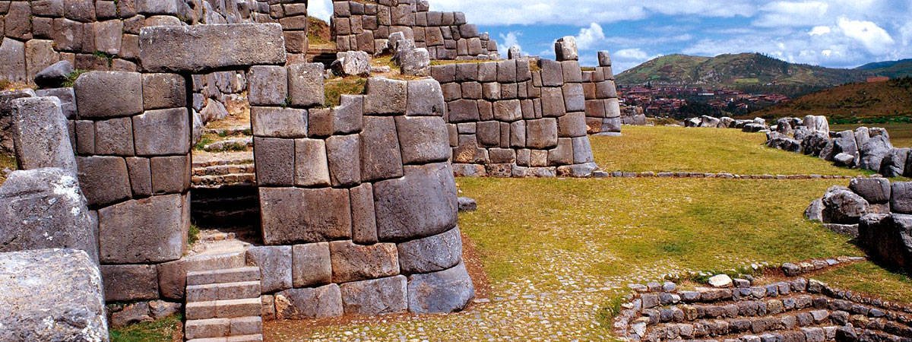

SACSAYHUAMAN (PERÚ)
Parque Arqueológico Sacsayhuaman
Imponente edificación incaica, rodeada de enormes rocas talladas y gran vegetación, el Parque Arqueológico de Sacsayhuaman es una construcción que asombra por sus perfectas conexiones entre sus muros pétreos. Construida entre el periodo de los incas Pachacuteq y Huayna Capac, actualmente abarca 2,296.76 hectáreas (fuente DDC Cusco). Su majestuosidad la convierten en una de las expresiones arquitectónicas místicas pertenecientes al Tahuantinsuyo.
Ubicada a 2 km de la ciudad de Cusco aproximadamente, los grandes bloques del Parque Arqueológico Sacsayhuamán, hechos a base de granito, miden hasta 9 metros de alto, considerado los de mayor tamaño dentro de las zonas arqueológicas incas. Cada uno de estos muros encaja sin ningún tipo de amalgama. El interior de esta construcción se identifica por sus templos, almacenes y canales de aguas a más de 200 metros de largo.
El origen de su nombre quechua al español significa “halcón satisfecho”, debido a que desde este punto se podía vigilar la capital del Imperio incaico. El Parque Arqueológico Sacsayhuaman sirve como escenario para la escenificación del Inti Raymi (Fiesta del Sol) que se realiza durante el solsticio de invierno, todos los 24 de junio.